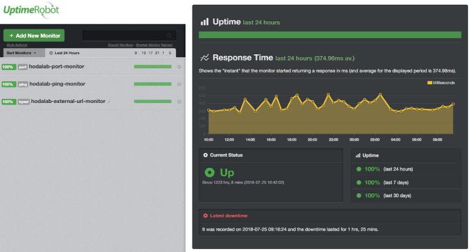
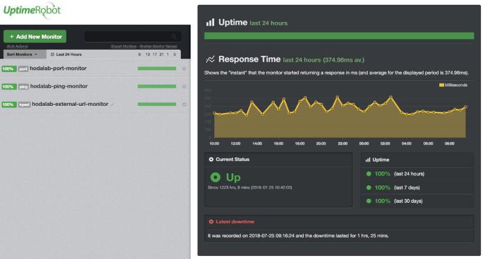
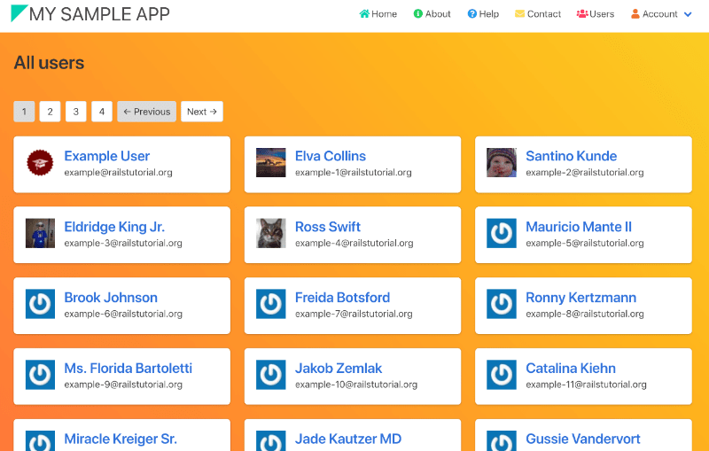
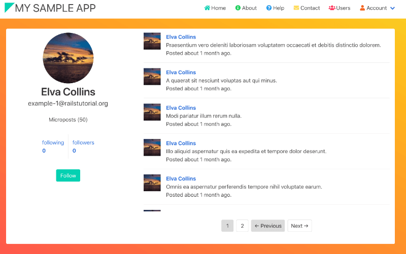
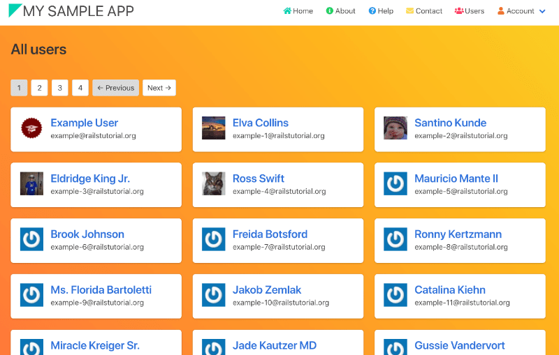
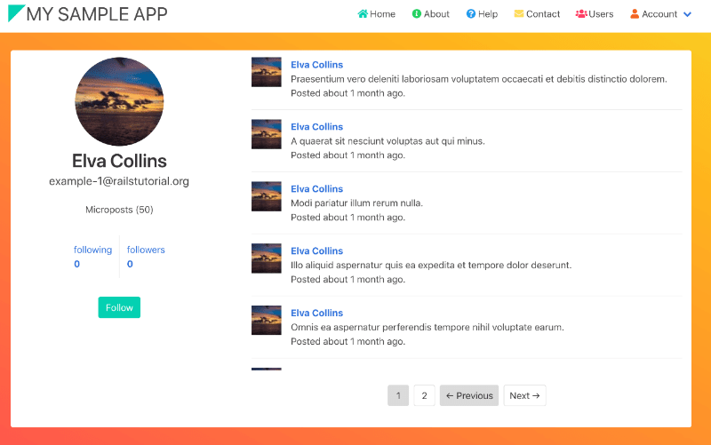

About me

名前：西田 凱
出身：大阪府（現在香川県在住）
学歴：高等学校卒業程度認定試験合格
活動：13歳からIT業界で働くことを考え独学を始め、19歳からIT企業に就職しSESとして活動
その他：実家のある大阪にUターンして転職したいと考えています
名前：西田 凱
出身：大阪府（現在香川県在住）
学歴：高等学校卒業程度認定試験合格
活動：13歳からIT業界で働くことを考え独学を始め、19歳からIT企業に就職しSESとして活動
その他：実家のある大阪にUターンして転職したいと考えています
腕によりをかけて制作した、愛すべき成果物たちをご紹介します。
Ruby on Railsのチュートリアルに沿って制作したWebアプリケーションです。Twitterのように小さなコメントを投稿したり、ユーザーをフォローして極簡単なコミュケーションが取れます。このチュートリアルを通してテスト駆動開発、CRUD、ユーザー登録などの基礎的な考え方を学ぶことができました。今後は実務レベルでこれらの技術を活用することを考えています。
Ruby on Rails, HTML/CSS(SASS), Bulma, jQuery, Sqlite（開発), Postgresql（本番）, Heroku, SendGrid
WordPressの個人ブログを快適に運用するためのシステムをAWSで構築しました。EC2にDockerのコンテナを建てて、そのコンテナの中でWebサーバーを動かしています。S3とEC2をVPCエンドポイントで結び、S3にメディアファイルを保管しています。さらにCronを利用して、コンテナごとS3へぽいぽい自動バックアップする仕組みを作りました。
サーバーに異常があった場合でもすぐに気づけるよう、MackerelとUptime Robotで監視しています。
AWS EC2/S3/IAM, Docker, Mackerel, Uptime Robot
 

修練のすえ身につけたスキルをグラフィカルにまとめました。広く浅くではありますがフロントからバックエンドまで幅広くスキルアップに取り組んできました。オールラウンドに対応できる点が強みですが、全体的に理解が浅く、専門性の低さが弱点です。Reactなどのモダンな技術はキャッチアップしつつも、バックエンド系の開発やデータサイエンス領域の業務に携わる比率を増やし、専門性を高めていきたいと考えています。
＊業務で実際に使用した技術のみ掲載しております。
チャートの見方としては「1: 触ったことがある程度」、「2: 実務で使用しているがもう少し習熟が必要」、「3: 実務レベルで自由に駆使できる」。という感じです。その他、実務で2ヶ月以上使用した経験のある技術について、こちらをご覧ください。
せっかくなので私のこれまでの人生を一緒に振り返りましょう。
サボりながらではありましたが、大学卒業までゆるゆると続けました
光触媒と呼ばれる、太陽エネルギーで有害物質を浄化する材料の研究してました
電子回路のリーバスエンジニアリング、VBAプログラミング、廃材やジャンク品から実験装置を作成したり、技術者としても社会人としても多くのことを学ぶことができました。
しかし生産業務が増えてから、代替の効く一労働者としての働き方に疑問を持つようになります。
電子書籍やライフハック記事を読むようになります。
ちきりんの「未来の働き方を考えよう」、リンダ・グラットンの「WORK SHIFT」、植松努の「空想教室」、「7つの習慣」や「嫌われる勇気」など、影響を受けました。
「アフィリエイトで儲かってノマド生活ができたら最高だなぁ」と思い、WordPressで楽譜の読み方や楽譜作成ソフトの使い方などの情報を発信し始めます。残念ながらこれで生活できるほど稼げてはいません。しかし2017年8月現在、月間80000PVのアクセスがあり、多くの人とWeb上で繋がっています。このブログをきっかけに、私はWebサイト制作の楽しさとIT技術のすごさを実感しました。
「自由にWebアプリケーションを作れるようになったら、もっとすごいことになる！」
一念発起、5年間勤務した会社を辞めました。退職後、職業訓練学校でHTML/CSS, JavaScript, JAVA, SQLの基礎を学びます。
IT企業に拾ってもらい、現在はWebエンジニアとして働いています。
日々の忙しさについ忘れてしまいがちですが、今の私があるのは色んな人たちのサポートのおかげです。退職の際に応援してくれた人、技術的に未熟な私にもお仕事を紹介してくださるエージェント、スキルを磨ける環境で働かせてくださったクライアントに、本当に心から感謝しています。
様々なWebサービスに触れて人生が変わる体験をしたように、今後は消費するだけでなく、体験価値を届けられるようなエンジニアになりたい。私自身が抱えている課題や周りの身近な人が抱えている問題をエンジニアリングで解決できるようになりたいと考えています。
また、エンジニアリングが好きなので、生涯エンジニアとして社会に貢献し続けたいとも思っています。
それを実現するにはどうしたらいいのか。
日々進化し続ける技術をキャッチアップするための研鑽はもちろんのこと、クライアントの悩みや課題を解決できるよう、クライアントの目線を培っていく必要があります。
まだまだ至らない点はたくさんありますが、時代に合わせた技術を追いかけつつ、クライアントに寄り添ったエンジニアリングができるよう、心がけていきます。
最後までご覧いただきありがとうございました。このサイトを通して、私のことを少しでも知っていただけたのなら嬉しいです。もしこのサイトや私について何かコメントがありましたら、下記フォームをご利用ください。
 


